일반기계기사 (2012-03-04 기출문제)
1과목: 재료역학
1. 그림과 같이 원형단면을 갖는 연강봉이 100 kN의 인장하중을 받을 때 이 봉의 신장량은? (단, 탄성계수 E는 200 GPa이다.)
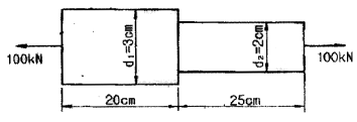
- 0.⑤4 cm
- 0.162 cm
- 0.236 cm
- 0.302 cm
(정답률: 52%)
2. 단면이 가로 100mm 세로 150mm인 시각 단면보가 그림과 같이 하중(P)를 받고 있다. 허용 전단응력이 Ta= 20 MPa일 때 전단응력에 의한 설계에서 허용하중 P는 몇 kN인가?
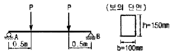
- 10
- 20
- 100
- 200
(정답률: 31%)

3. 양단이 고정단이고 길이가 직경의 10배인 주철 재질의 원주가 있다. 이 기둥의 임계응력을 오일러 식을 이용해구하면 얼마인가? (단, 재료의 탄성계수는 E이다.)
- 0.266E
- 0.0247E
- 0.0⑤47E
- 0.00146E
(정답률: 38%)
4. 그림과 같은 단순 지지보에서 길이는 5m, 중앙선에서 집중하중 P가 작용할 때 최대 처짐은 약 몇 mm 인가? (단, 보의 단면(폭 × 높이 = b × h)은 5cm ×12cm, 탄성계수 E = 210 GPa P = 25 kN으로 한다.)
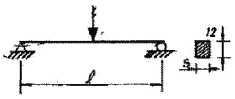
- 83
- 43
- 28
- 65
(정답률: 47%)
5. 그림과 같이 두께가 20mm, 외경이 200mm인 원관을 고정벽으로부터 수평으로 돌출시켜 원관에 물을 충만시켜서 자유단으로부터 물을 방출시킨다. 이 때 자유단의 처짐이 5mm라면 원관의 길이 ℓ는 약 몇 cm 인가? (단, 원관 재료의 탄성계수 E = 200GPa, 비중은7.8 이고 물의 밀도는 1000 kg/m3이다.)
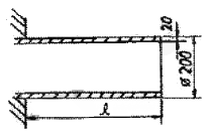
- 130
- 230
- 330
- 430
(정답률: 19%)
6. 외경이 내경의 1.5배인 중공축과 재질과 길이가 같고 지름이 중공의 외경과 같은 중실축이 동일 회전수에 동일 동력을 전달한다면, 이때 중실축에 대한 중공축의 비틀림각의 비는?
- 1.25
- 1.50
- 1.75
- 2.00
(정답률: 38%)
7. 그림과 같은 직사각형 단면의 보에 P=4 kN의 하중이 10°경사진 방향으로 작용한다. A점에서의 길이 방향의 수직 응력을 구하면 몇 MPa인가?(오류 신고가 접수된 문제입니다. 반드시 정답과 해설을 확인하시기 바랍니다.)
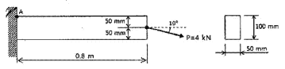
- 5.89(압축)
- 6.67(압축)
- 0.79(인장)
- 7.46(인장)
(정답률: 28%)
8. 길이가 L인 양단 고정보의 중앙점에 집중하중 P가 작용할 때 최대 처짐은? (단, 보의 굽힘강성 EI는 일정하다.)
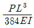
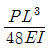
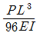
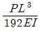
(정답률: 44%)
9. 철도용 레일의 양단을 고정한 후 온도가 30℃에서 15℃로 내려가면 발생하는 열응력은 몇 MPa 인가? (단, 레일재료의 열팽창계수 a=0.00012/℃ 이고, 균일한 온도 변화를 가지며, 탄성계수 E = 210 GPa이다.)
- 50.4
- 37.8
- 31.2
- 28.0
(정답률: 54%)
10. 길이 1m인 단순보가 아래 그림처럼 q=5kN/m의 균일 분포하중과 P = 1kN의 집중하중을 받고 있을 때 최대 굽힘 모멘트는 얼마이며 그 발생되는 지점은 A점에서 얼마되는 곳인가?
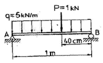
- 48cm에서 241 N ∙ m
- 58cm에서 620 N ∙ m
- 48cm에서 800 N ∙ m
- 58cm에서 841 N ∙ m
(정답률: 33%)
11. 다음과 같은 압력 기구에 안전 밸브가 장치되어 있다. 이때 스프링 상수가 k = 100 kN/m이고 자연상태에서의 길이는 240mm라 한다. 몇 kN/m2의 압력에 밸브가 열리겠는가?
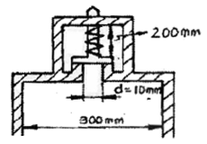
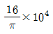
- π×104
- π×102
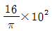
(정답률: 35%)
12. 그림과 같은 집중하중을 받는 단순 지지보의 최대 굽힘 모멘트는? (단 보의 굽힘강생 EI는 일정하다.)
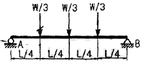
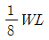
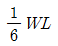
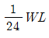
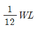
(정답률: 27%)
13. 지름 d인 환봉을 처짐이 최소가 되도록 직사각형 단면의 보를 만들 경우 단면의 폭 b와 높이 h의 비(h/b)는?
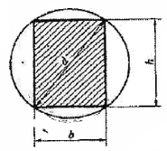
- 1
- √2
- √3
- √5
(정답률: 35%)
14. 코일스프링에서 가하는 힘 P, 코일 반지름 R, 소선의 지름 d, 전단탄성계수 G라면 코일 스프링에 한번 감길 때마다 소선의 비틀림각 ∅를 나타내는 식은?
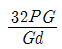
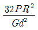
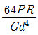
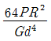
(정답률: 37%)
15. 그림과 같은 1축 응력(응력치: σ, σ는 y축 방향)상태에서 재료의 Z-Z단면(x축과 45° 반시계 방향 경사)에 생기는 수직응력 σn, 전단응력 Tn의 값은?
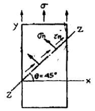
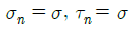
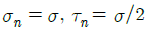
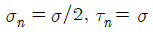
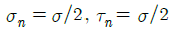
(정답률: 26%)
16. 짧은 주철재 실린더가 축방향 압축 응력과 반경 방향의 압축 응력을 각각 40MPa과 10MPa를 받는다. 탄성계수 E = 100 GPa, 포아송 비 =0.25, 직경d=120mm, 길이 L=200mm 일 때 지름의 변화량은 약 몇 mm 인가?
- 0.001
- 0.002
- 0.003
- 0.004
(정답률: 21%)
17. 굽힘하중을 받고 있는 선형 탄성 균일단면 보의 곡률 및 곡률반경에 대한 설명으로 틀린 것은?
- 곡률은 굽힘모멘트 M에 반비례한다.
- 곡률반경은 탄성계수 E에 비례한다.
- 곡률은 보의 단면 2차 모멘트 I에 반비례한다.
- 곡률반경은 곡률의 역수이다.
(정답률: 30%)
18. 양단이 고정된 축을 그림과 같이 m-n 단면에서 비틀면 고정단에서 생기는 저항 비틀림 모멘트의 비 TB / TA는?
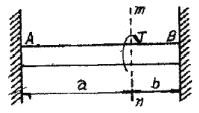
- ab
- b/a
- a/b
- ab2
(정답률: 46%)
19. 진변형률(ɛT)과 진응력(σT)을 공칭 응력(σn)과 공칭 변형률(ɛn)로 나타낼 때 옳은 것은?
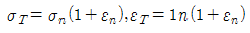
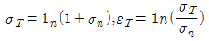
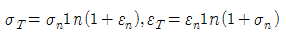
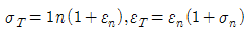
(정답률: 47%)
20. 그림에서 W1 과 W2 가 어느 한쪽도 내려가지 않게하기 위한 W1 , W2 의 크기의 비는 어느 것인가? (단, 경사면의 마찰은 무시한다.)
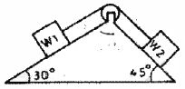
- W1 : W2 = sin30° : sin45°
- W1 : W2 = sin45° : sin30°
- W1 : W2 = cos45° : cos30°
- W1 : W2 = cos30° : cos45°
(정답률: 36%)
2과목: 기계열역학
21. 실린더간에 0.8 kg의 기체를 넣고 이것을 압축하기 위해서는 13 kJ의 일이 필요하며, 또 이때 실린더를 냉각하기 위해서 10 kJ의 열을 빼앗아야 한다면 이기체의 비 내부에너지 변화량은?
- 3.75 kJ/kg의 증가
- 28.9 kJ/kg의 증가
- 3.75 kJ/kg의 감소
- 28.8 kJ/kg의 감소
(정답률: 30%)
22. 에어컨을 이용하여 실내의 열을 외부로 방출하려한다. 실외 35.8°, 실내 20℃인 조건에서 실내로부터 3kW의 열을 방출하려 할 때 필요한 에어컨의 동력은얼마인가? (단, Carnot cycle을 가정한다.)
- 0.154 kW
- 1.54 kW
- 15.4 kW
- 154 kW
(정답률: 37%)
23. 두께 1cm, 면적 0.5m2 의 석고판의 뒤에 가열 판이 부착되어 1000 W의 열을 전달한다. 가열 판의 뒤는 완전히 단열되어 열은 앞면으로만 전달된다. 석고판앞면의 온도는 100℃이다. 석고의 열전도율이 k =0.79 W/m ∙ K일 때 가열 판에 접하는 석고 면의 온도는 약 몇 ℃ 인가?
- 110
- 125
- 150
- 212
(정답률: 39%)
24. 다음 냉동 시스템의 설명 중 틀린 것은?
- 왕복동 압축기는 냉매가 낮은 비체적과 높은 압력일 때 적합하며 원심 압축기는 높은 비체적과 낮은 압력일 때 적합하다.
- R-22와 같이 수소를 포함하는 HCFC는 대기 중의 수명이 비교적 짧으므로 성층권에 도달하여 분해되는 양이 적다.
- 냉동 사이클은 동력 사이클의 터빈을 밸브나 긴 모세관 등의 스로를 기기로 대치하여 작동유체가 고압에서 저압으로 스로틀 팽창하도록 한다.
- 흡수식 시스템은 액체를 가압하므로 소요되는 압력일이 매우 크다.
(정답률: 19%)
25. 29℃와 227℃ 사이에서 작동하는 카르노(Carnot)사이클 열기관의 열효율은?
- 60.4%
- 39.6%
- 0.604%
- 0.396%
(정답률: 44%)
26. 고속주행 시 타이어의 온도는 매우 많이 상승한다. 온도 20℃에서 계기압력 0.183 MPa의 타이어가 고속주행으로 온도 80℃로 상승할 때 압력 상승한 양(kPa)은? (단, 타이어의 체적은 변하지 않고, 타이어 내의 공기는 이상기체로 가정한다. 대기압은 101.3kPa이다.)
- 약 37kPa
- 약 58kPa
- 약 286kPa
- 약 345kPa
(정답률: 27%)
27. 어떤 냉장고에서 질량유량 80kg/hr의 냉매가 17kJ/kg의 엔탈피로 증발기에 들어가 엔탈피 36kJ/kg가되어 나온다. 이 냉장고의 냉동능력은?
- 1220 kJ/hr
- 1800 kJ/hr
- 1520 kJ/hr
- 2000 kJ/hr
(정답률: 51%)
28. 오토사이클(otto Cycle)의 이론적 열효율
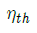
를 나타내는 식은? (단, e는 압축비, k는 비열비이다.)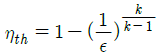
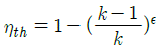
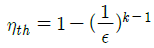
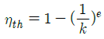
(정답률: 49%)
29. 다음 사항 중 옳은 것은?
- 엔트로피는 상태량이 아니다.
- 엔트로피를 구하는 적분 경로는 반드시 가역변화라야 한다.
- 비 가역사이클에서 클라우지우스((Clausius) 적분은 영이다.
- 가역, 비가역을 포함하는 모든 이상기체의 등온변화에서 압력이 저하하면 엔트로피도 저하한다.
(정답률: 26%)
30. 성능계수(COP)가 0.8인 냉동기로서 7200 kJ/h로냉동하려면 이에 필요한 동력은?
- 약 0.9 kW
- 약 1.6 kW
- 약 2.5 kW
- 약 2.0 kW
(정답률: 41%)
31. 다음 중 열역학적 상태량이 아닌 것은?
- 기체상수
- 정압비열
- 엔트로피
- 압력
(정답률: 28%)
32. 물질의 상태에 관한 설명으로 옳은 것은?
- 압력이 포화압력보다 높으면 과열증기 상태다.
- 온도가 포화온도보다 높으면 압축액체이다.
- 임계압력 이하의 액체를 가열하면 증발현상을 거치지 않는다.
- 포화상태에서 압력과 온도는 종속관계에 있다.
(정답률: 25%)
33. 100kPa, 20℃의 물을 매시간 3000kg씩 500kPa로 공급하기 위하여 소요되는 펌프의 동력은 약 몇 kW인가? (단, 펌프의 효율은 70%로 물의 비체적은 0.001m3/kg으로 본다.)(오류 신고가 접수된 문제입니다. 반드시 정답과 해설을 확인하시기 바랍니다.)
- 0.33
- 0.48
- 1.32
- 2.48
(정답률: 27%)
34. 다음 열기관 사이클의 에너지 전달량으로 적절한 것은?
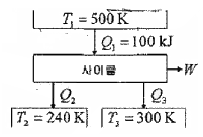
- Q2=20kJ, Q3=30kJ, W=50kJ
- Q2=20kJ, Q3=50kJ, W=30kJ
- Q2=30kJ, Q3=30kJ, W=50kJ
- Q2=30kJ, Q3=80kJ, W=50kJ
(정답률: 16%)
35. 질량 m=100 kg인 물체에 a=2.5 m/s2 의 가속도를 주기 위해 가해야 할 힘(F)은 약 몇 N 인가?
- 102
- 2⑤
- 225
- 250
(정답률: 50%)
36. 그림과 같은 증기압축 냉동사이클이 있다. 1, 2, 3상태의 엔탈피가 다음과 같을 때 냉매의 단위 질량당소요 동력과 냉각량은 얼마인가? (단, h1=178.16, h2=210.38, h3=74.53, 단위:kJ/kg)
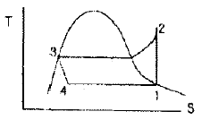
- 32.22 kJ/kg, 103.63 kJ/kg
- 32.22 kJ/kg, 136.85 kJ/kg
- 103.63 kJ/kg, 32.22 kJ/kg
- 136.85 kJ/kg, 32.22 kJ/kg
(정답률: 27%)
37. 대기압하에서 20℃의 물 1kg을 가열하여 같은 압력의 150℃의 과열 증기로 만들었다면, 이때 물이 흡수한 열량은 20C와 150℃에서 어떠한 양의 차이로 표시되겠는가?
- 내부에너지
- 엔탈피
- 엔트로피
- 일
(정답률: 38%)
38. 두 정지 계가 서로 열 교환을 하는 경우에 한쪽계는 수열에 의한 엔트로피 증가가 있고 다른 계는 방열에 의한 엔트로피 감소가 있다. 이들 두 계를 합하여 한계로 생각하면 단열된 계가 된다. 이 합성계가 비가역 단열변화를 하면 이 합성계의 엔트로피 변화 dS는?
- dS < 0
- dS > 0
- dS = 0
- ds≠ 0
(정답률: 25%)
39. 질량 4kg의 액체를 15℃에서 100℃까지 가열하기위해 714 kJ의 열을 공급하였다면 액체의 비열(specificheat)은 몇 J/kg ∙ K인가?
- 1100
- 2100
- 3100
- 4100
(정답률: 48%)
40. 800 kPa 350℃의 수증기를 200 kPa로 교축한다. 이 과정에 대하여 운동 에너지의 변화를 무시할 수 있다고 할 때 이 수증기의 Joule-Thomson 계수는? (단, 교축 후의 온도는 344℃이다)
- 0.0⑤ K/Kpa
- 0.01 K/Kpa
- 0.02 K/Kpa
- 0.03 K/Kpa
(정답률: 31%)
3과목: 기계유체역학
41. 다음 중 Mosoy선도에 대하여 잘못 설명한 것은?
- Nikuradse에 의하여 얻어진 자료를 기초로 하였다.
- 압축성 영역의 유동에도 적용이 가능하다.
- 마찰계수와 레이놀즈수와의 관계를 보인다.
- 마찰계수와 상대조도와의 관계를 보인다.
(정답률: 26%)
42. 직경이 5mm인 원형 직선관 내를 0.2 L/min의 유량으로 물이 흐르고 있다. 유량을 두 배로 하기 위해서 는 몇 배의 압력을 가해 주어야 하는가? (단, 물의 동점성계수는 약 10-6 m/s 이다.)
- 0.71배
- 1.41배
- 2배
- 4배
(정답률: 35%)
43. 온도 25℃인 공기의 압력이 200kPa(abs)일 때 동정성 계수는 0.12 cm2/s이다. 이 온도와 압력에서 공기의 점성계수는 약 몇 kg/m∙s 인가? (단, 공기의 기체상수는 287 J/kg∙K이다.)
- 2.338
- 27.87
- 2.8×10-5
- 0.12×10-4
(정답률: 37%)
44. x, y좌표계의 비회전 2차원 유동장에서 속도 포텐셜(potential) ∅는 ∅=2x2 y로 주어진다. 점(3, 2)인 곳에서 속도 벡터는? (단, 속도포텐셜 ∅는V=∇∅=grad∅로 정의된다.)
- 24j +18j
- -24j +18j
- 12j +9j
- -12j +9j
(정답률: 40%)
45. 모세관 현상에 대한 설명으로 틀린 것은?
- 액체가 관을 적실 때(wet) 액체 기둥은 원래의 표면보다 상승한다.
- 접촉각이 90° 보다 작을 때 관의 직경이 가늘수록 액체는 더 높이 상승한다.
- 접촉각이 90° 보다 클 때 액체 기둥은 원래의 표면보다 상승한다.
- 동일한 조건에서 표면장력만 2배가 되면, 액체 기둥의 상승 높이는 2배가 된다.
(정답률: 30%)
46. 그림과 같이 고정된 노즐로부터 밀도가 p인 액체의 제트가 속도 V로 분출하여 평판에 충돌하고 있다. 이때 제트의 단면적이 A이고 평판이 u인 속도로 분류 방향으로 운동할 때 평판에 작용하는 힘 F는?
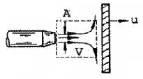
- F = pA(V+u)
- F = pA(V+u)2
- F = pA(V-u)
- F = pA(V-u)2
(정답률: 46%)
47. 정압이 100 kPa인 물(밀도 1000 kg/m3)이 20m/s로 흐르고 있을 때 정체압은 몇 kPa인가?
- 150
- 103
- 200
- 300
(정답률: 30%)
48. 프란틀의 혼합거리(mixing length)에 대한 설명 중 옳은 것은?
- 전단응력과 무관하다.
- 벽에서 0 이다.
- 항상 일정하다.
- 층류 유동은제를 계산하는데 유용하다.
(정답률: 27%)
49. 지름 D = 4cm 무게 W = 0.4N 인 골프공이 60m/s의 속도로 날아가고 있을 때, 골프공이 받는 항력과 항력에 의한 가속도의 크기는 중력가속도의 몇 배인가? (단, 골프공의 항력계수 C0=0.25 이고, 공기의 밀도는 1.2kg/m3이다.)
- 6.78N, 1.7배
- 6.78N, 0.7배
- 06.78N, 1.7배
- 06.78N, 0.7배
(정답률: 32%)
50. 내경 10cm의 원관 속을 0.1m3/s의 물이 흐를 때 관속의 평균 유속은 약 몇 m/s 인가?
- 0.127
- 1.27
- 12.7
- 127
(정답률: 43%)
51. 중력과 관성력의 비로 정의되는 무차원수는? (단, ρ:밀도, V :속도, l:특성 길이, : 점성계수, P:압력, g:중력가속도, c:소리의 속도)
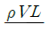
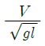
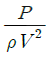
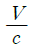
(정답률: 43%)
52. 물을 사용하는 원심 펌프의 설계점에서의 전 양정이 30m이고 유량은 1.2m3/min 이다. 이 펌프를 설계점에서 운전할 때 필요한 축 동력이 7.35kW라면 이펌프의 전 효율은?
- 70%
- 80%
- 90%
- 100%
(정답률: 42%)
53. 원통형의 면 ABC에 수평방향으로 작용하는 힘은 약 몇 kN 인가? (단, 유체의 비중은 1이다.)
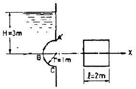
- 117.6
- 307.9
- 122
- 3
(정답률: 27%)
54. 파이프 유동에 대한 다음 설명 중 틀린 것은?
- 레이놀즈수가 1500일 때 관마찰계수는 약 0.043이다.
- 수력반경은 유동의 단면적과 접수 길이에 의하여 결정된다.
- 원형관 속의 손실 수두는 점성유체에서 발생한다.
- 부차적 손실은 관의 거칠기에 의해 주로 발생한다.
(정답률: 20%)
55. 그림에서 h = 50cm 이다. 액체의 비중이 1.90일때 A점의 계기압력은 몇 Pa 인가?
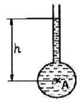
- 9500
- 950
- 93200
- 9310
(정답률: 40%)
56. 피스톤 A2의 반지름은 A1 반지름의 2배이며 A1 과 A2 에 작용하는 압력을 각각 P1, P2 라 하면 P1 , P2사이의 관계는? (단, 두 피스톤은 같은 높이에 위치하고 있다.)
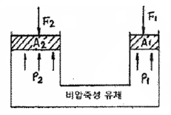
- P1 = 2P2
- P2 = 4P1
- P1 = P2
- P2 = 2P1
(정답률: 27%)
57. 공기 중을 10m/s로 움직이는 소형 비행선의 항력을 구하려고 1/5 축척의 모형을 물속에서 실험하려고 할 때 모형의 속도는 몇 m/s 로 해야 하는가? (단, 밀도 물 1000 kg/m3 공기 1 kg/m , 점성계수물 1.8×10-3 N ∙ s/m2, 공기 1×10-5 N ∙ s/m )
- 10
- 2
- 50
- 9
(정답률: 32%)
58. 유량이 10m3/s로 설정하고 수심이 1m로 일정한 강의 폭이 매 10m 마다 1m 씩 좁아진다. 강 폭이 5m인 곳에서 강물의 가속도는 몇 m/s인가? (단, 흐름 방향으로만 속도 성분이 있다고 가정한다.)
- 0
- 0.02
- 0.04
- 0.08
(정답률: 8%)
59. 다음 중 밀도가 가장 큰 액체는?
- 1 g/cm3
- 1200 kg/m3
- 비중 1.5
- 비중량 8000 N/m3
(정답률: 31%)
60. 공기의 유속을 측정하기 위하여 피토관을 사용했다. 물을 담은 U자관의 수주의 높이의 차가 10cm라면 공기의 유속은 약 몇 m/s 인가? (단, 공기의 밀도는 1.25 kg/m3이다.)
- 9.8
- 19.8
- 29.6
- 39.6
(정답률: 28%)
4과목: 기계재료 및 유압기기
61. 향온열처리를 하여 마텐자이트와 베이나이트의 혼합조직을 얻는 열처리는?
- 담금질
- 오스템퍼링
- 패턴팅
- 마템퍼링
(정답률: 40%)
62. 다음 중 강재의 화학 조성을 변화시키기 않으며 행하는 경화법은?
- 쇼트 피이닝
- 금속 침투법
- 질화법
- 침탄 질화법
(정답률: 61%)
63. 다음 주철에 관한 설명 중 틀린 것은?
- 주철중에 전 탄소량은 유리탄소와 화합탄소를 합한 것이다.
- 탄소(C)와 규소(Si)의 함량에 따른 주철의 조직관계를 마우러 조직도라 한다.
- 주강은 일반적으로 전기로에서 용해한 용강을 주형에 부어 풀림 열처리 한다.
- C, P양이 적고 냉각이 빠를수록 흑연화하기 쉽다.
(정답률: 59%)
64. 베어링에 사용되는 구리합금인 켈밋의 주성분은?
- 구리 - 주석
- 구리 - 납
- 구리 - 알루미늄
- 구리 - 니켈
(정답률: 55%)
65. 다음 금속 중 재결정 온도가 가장 높은 것은?
- Zn
- Sn
- Au
- Pb
(정답률: 33%)
66. 강의 담금질(quenching) 조직 중에서 경도가 가장 높은 것은?
- 펄라이트
- 오스테나이트
- 페라이트
- 마텐자이트
(정답률: 63%)
67. 탄소 강에서 인(P)의 영향으로 맞는 것은?
- 결정립을 조대화 시킨다.
- 연신율, 충격치를 증가시킨다.
- 적열취성을 일으킨다.
- 강도, 경도를 감소시킨다.
(정답률: 38%)
68. 강력하고 인성이 있는 기계주철 주물을 얻으려고 할 때 주철 중의 탄소를 어떠한 상태로 하는 것이 가장 적합한가?
- 구상 흑연
- 유리의 편상 흑연
- 탄화물(Fe3C)의 상태
- 입상 또는 괴상 흑연
(정답률: 49%)
69. 다음 중 불변강의 종류가 아닌 것은?
- 인바
- 코엘린바
- 쾌스테르바
- 엘린바
(정답률: 64%)
70. 다음 중 전기전도도가 좋은 순으로 나열된 것은?
- Cu > Al > Ag
- Al > Cu > Ag
- Fe > Ag > Al
- Ag > Cu > Al
(정답률: 65%)
71. 그림과 같은 유압기호는 무슨 밸브의 기호인가?
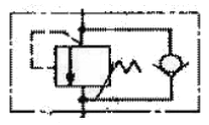
- 카운터 밸런스 밸브
- 무부하 밸브
- 시퀀스 밸브
- 릴리프 밸브
(정답률: 36%)
72. 피스톤 부하가 급격히 제거되었을 때 피스톤이 급진하는 것을 방지하는 등의 속도제어회로로 가장 적합한 것은?
- 카운터 밸런스 회로
- 시퀀스 회로
- 언로드 회로
- 증압 회로
(정답률: 58%)
73. 어큐물레이터(accumulator)의 주요 용도가 아닌 것은?
- 유압 에너지의 축적
- 펌프의 맥동 흡수
- 충격 압력의 완충
- 유압 장치의 대형화
(정답률: 61%)
74. 슬라이드 밸브 등에서 밸브가 중립점에 있을 때, 이미 포트가 열리고 유체가 흐르도록 중복된 상태를 의미하는 용어는?
- 제로 랩
- 오버 랩
- 언더 랩
- 랜드 랩
(정답률: 32%)
75. 안지름이 10mm인 파이프에 2 × 104cm /min의 유량을 통과시키기 위한 유체의 속도는 약 몇 m/s 인가?
- 4.2
- 5.2
- 6.2
- 7.2
(정답률: 47%)
76. 1개의 유압 실린더에서 전진 및 후진 단에 각각의 리밋스위치를 부착하는 이유로 가장 적합한 것은?
- 실린더의 위치를 검출하여 제어에 사용하기 위하여
- 실런더 내의 온도를 제어하기 위하여
- 실린더의 속도를 제어하기 위하여
- 실린더 내의 압력을 계측하여 이를 제어하기 위하여
(정답률: 44%)
77. 유압펌프의 소음발생 원인으로 거리가 먼 것은?
- 회전수가 규정치를 초과한 경우
- 릴리프 밸브가 닫힌 경우
- 펌프의 흡입이 불량한 경우
- 작동유의 점성이 너무 높은 경우
(정답률: 50%)
78. 유압 속도제어 회로 중 미터 아웃 회로의 설치 목적과 관계없는 것은?
- 피스톤이 자주(自走)할 염려를 제거한다.
- 실린더에 배압을 형성한다.
- 실린더의 용량을 변화시킨다.
- 실린더에 유출되는 유량을 제어하여 피스톤 속도를 제어한다.
(정답률: 48%)
79. 유압 작동유에 요구되는 성질이 아닌 것은?
- 비 인화성일 것
- 오염물 제거 능력이 클 것
- 체적 탄성계수가 작을 것
- 캐비테이션에 대한 저항이 클 것
(정답률: 56%)
80. 다음 유압회로의 명칭으로 옳은 것은?
- 로크 회로
- 증압 회로
- 무부하 회로
- 축압 회로
(정답률: 61%)
5과목: 기계제작법 및 기계동력학
81. 200mm 사인바로 10° 각을 만들려면 사인바 양단의 게이지블록의 높이차는 약 몇 mm 이어야 하는가? (단, 경사면과 측정면에 일치한다.)
- 34.73mm
- 39.70mm
- 44.76mm
- 49.10mm
(정답률: 38%)
82. 최소 측정값이 1/20mm인 버니어캘리퍼스에 대한 설명으로 옳은 것은?
- 본척의 최소 눈금이 1mm, 부척의 1눈금은 12mm를 25등분한 것
- 본척의 최소 눈금이 1mm, 부척의 1눈금은 19mm를 20등분한 것
- 본척의 최소 눈금이 0.5mm, 부척의 1눈금은 19mm 를 25등분한 것
- 본척의 최소 눈금이 0.5mm, 부척의 1눈금은 24mm 를 20등분한 것
(정답률: 53%)
83. 주조시 탕구의 높이와 유속과의 관계가 옳은 식은? (단, v: 유속(cm/s), h: 탕구의 높이(쇳물이 채워진 높이, cm) g: 중력 가속도(cm/s2), C: 유량계수이다.)
(정답률: 62%)
84. 센터리스 연삭의 특징에 대한 설명으로 틀린 것은?
- 연속작업을 할 수 있어 대량 생산이 용이하다.
- 축 방향의 추력이 있으므로 연삭 여유가 커야한다.
- 높은 숙련도를 요구하지 않는다.
- 키 홈과 같은 긴 홈이 있는 가공물은 연삭이 어렵다.
(정답률: 29%)
85. 두께 2mm의 연강판에 지름 20mm의 구멍을 펀칭하는데 소요되는 동력은 약 몇 kW 인가? (단, 프레스 평균전단속도는 5m/min, 판의 전단응력은 275MPa, 기계효율은 60%이다.)
- 3.2
- 3.9
- 4.8
- 5.4
(정답률: 42%)
86. 구성인선(Built-up edge)의 방지대책으로 틀린 것은?
- 칩의 두께를 크게 한다.
- 경사각(rake angle)을 크게 한다.
- 절삭속도를 크게 한다.
- 절삭공구의 인선을 예리하게 한다.
(정답률: 51%)
87. 지름 4mm의 가는 봉재를 선재인발(wire drawing)하여 3.5mm가 되었다면 단면 감소율은?
- 23.4%
- 14.2%
- 12.5%
- 5.7%
(정답률: 24%)
88. 일반적으로 기계가공한 강제품을 열처리하는 목적이 아닌 것은?
- 표면을 경화시키기 위한 것이다.
- 조직을 안정화시키기 위한 것이다.
- 조직을 조대화하여 편석을 발생시키기 위한 것이다.
- 경도 및 강도를 증가시키기 위한 것이다.
(정답률: 57%)
89. 용접의 분류에서 아크 용접이 아닌 것은?
- MIG 용접
- TIG 용접
- 테르밋 용접
- 스터드 용접
(정답률: 37%)
90. 다음 중 정밀입자에 의한 가공이 아닌 것은?
- 호닝
- 래핑
- 버핑
- 버니싱
(정답률: 45%)
91. 2개의 조화운동 x1=3sinwt 와 x2=4coswt의 합성운동을 나타내는 식은?
- 5sin(wt+0.869)
- 25cos(wt-0.869)
- 5sin(wt+0.927)
- 25cos(wt-0.927)
(정답률: 28%)
92. 운동방정식이 mx+cx+kx=0인 감쇠 진동계에서 감쇠비 ζ를 나타내는 식이 아닌 것은?
(정답률: 25%)
93. 네 개의 가는 막대로 구성된 정사각 프레임이 있다. 막대 각각의 질량과 길이는 m과b이고, 프레임은 w의 각속도로 회전하고 질량 중심 G는 v의 속도로 병진운동하고 있다. 프레임의 병진운동에너지와 회전운동에너지가 같아질 때 질량중심 G의 속도는 얼마인가?
(정답률: 34%)
94. 어느 진동계의 운동방정식이 3x+75x=0으로 주어졌다. 여기에서 시간의 단위는 초이다. 이 진동계의 고유진동수 f는 약 몇 Hz인가?
- 4
- 0.8
- 12
- 36
(정답률: 36%)
95. 그림과 같이 원판에서 원주에 있는 점 A의 속도가 12m/s 일 때 원판의 각속도는 몇 rad/s 인가? (단, 원판의 반지름 r은 0.3m 이다.)
- 10
- 20
- 30
- 40
(정답률: 41%)
96. 어떤 사람이 정지 상태에서 출발하여 직선 방향으로 등가속도 운동을 하여 5초 만에 10m/s의 속도가 되었다. 출발하여 5초 동안 이동한 거리는 몇 m 인가?
- 5
- 10
- 25
- 50
(정답률: 44%)
97. 자동차가 일정한 속력으로 언덕을 넘어가고 있다. 언덕의 정점에서의 곡률반경은 p이다. 중력가속도 g라 할 때, 이 위치에서 자동차가 지면으로부터 떨어지지 않고 달릴 수 있는 최대속력은 얼마인가?
- pg
- g/p2
- p2g
- √pg
(정답률: 31%)
98. 그림과 같이 5kg의 칼러(Collar)가 수직막대의 위를 마찰이 없이 미끄러진다. 칼러에 붙여진 스프링은 변형되지 않았을 때 길이가 10cm이고 스프링 상수는 500N/m이다. 칼러가 위치에서 정지 상태에 놓여 있다가 수직 아래로 위치 2까지 20cm를 움직인다. 탄성에너지 변화는 몇 J 인가?
- 7.5
- 5.0
- 2.5
- 10.0
(정답률: 23%)
99. 다음 그림과 같이 질량이 동일한 두 개의 구슬 A,B가 있다. A의 속도는 v이고 B는 정지되어 있다. 충돌후 A와 B의 속도에 관한 설명으로 옳은 것은? (단, 두 구슬 사이의 반발계수는 e=1 이다.)
- A와 B 모두 정지한다.
- A는 정지하고 B는 v의 속도를 가진다.
- A와 B 모두 v의 속도를 가진다.
- A와 B 모두 v/2의 속도를 가진다.
(정답률: 45%)
100. 감쇠비가 인 그림과 같이 1자유도 시스템에서, 질량이 외력에 의하여 조화진동을 하고 있다. 질량 m의 변위 진폭을 가장 크게 하는 고유 각진동수는? (단, 감쇠기가 없을 때의 고유진동수는 wn 이다.)
- wn
(정답률: 20%)
허용 전단응력 Ta = T/Pa 이므로, 전단응력 T = TaPa = 20 MPa × 100 mm × 150 mm / (2 × 106 N/mm2) = 1500 N.
따라서, 허용하중 P = T / (τ × Q / t) = 1500 N / (τ × (100 mm × 150 mm3 / 12) / 100 mm) = 200 kN.
따라서, 정답은 "200"이다.